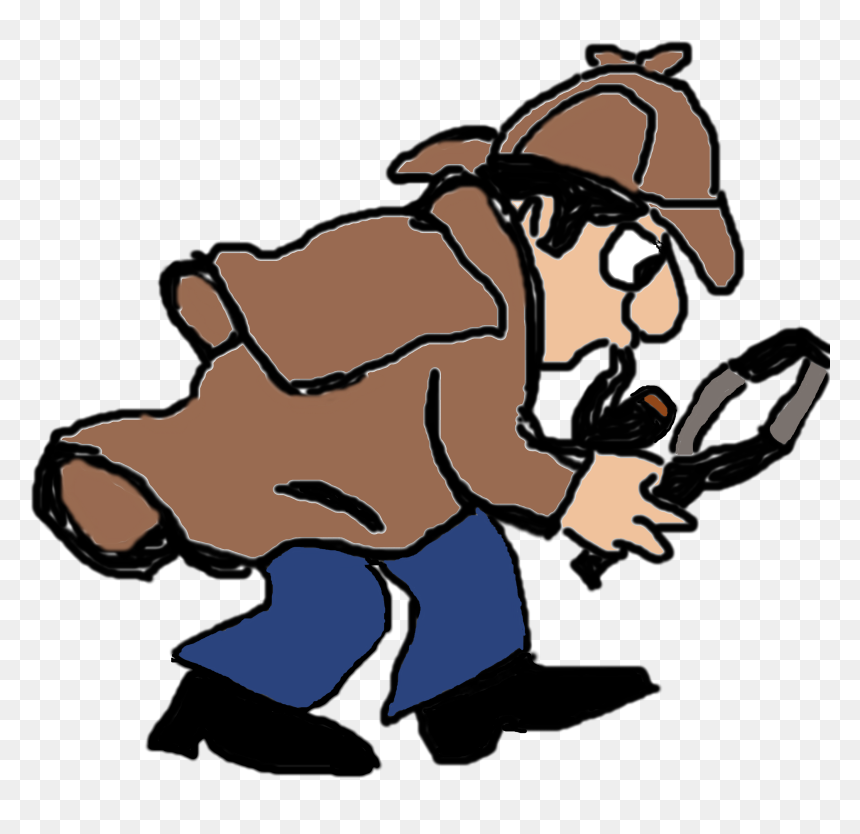

There will be a mystery snack revealed at 26th June around 14:30 CEST

Hints
it is a famous snack in south asia
goes really well with
chai
if the snack is drawn on 2D surface, sum of all interior angles ==
180